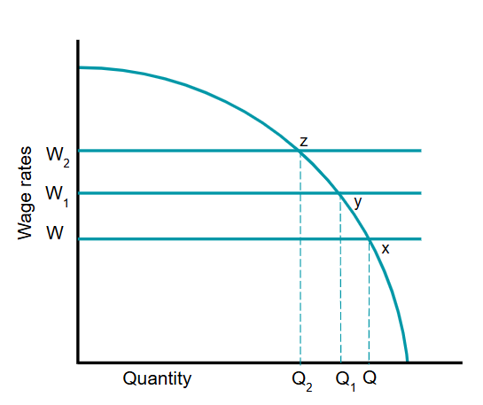
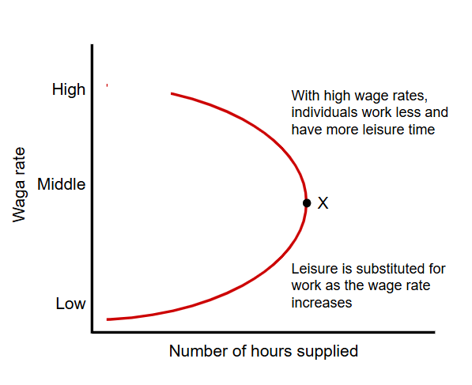
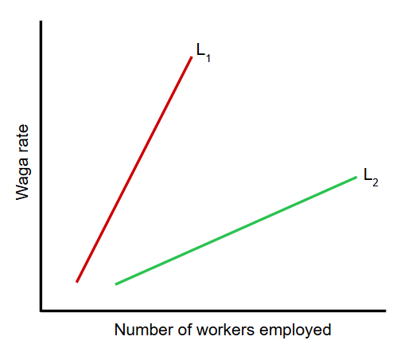
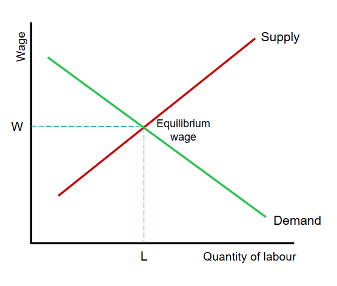
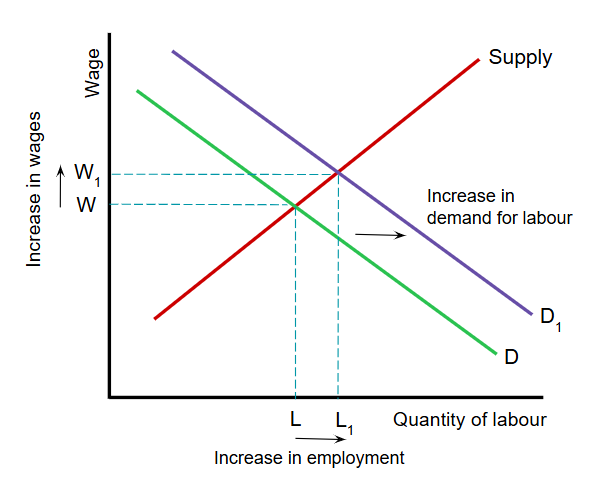
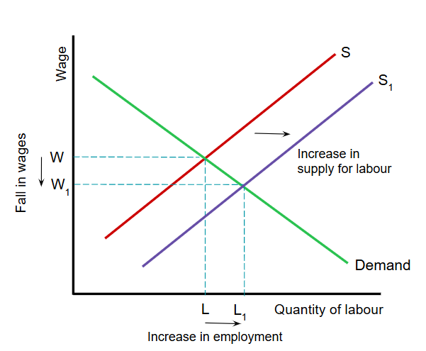
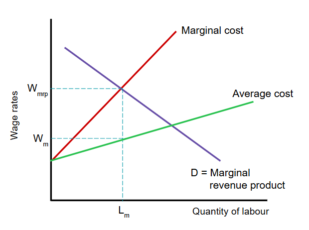
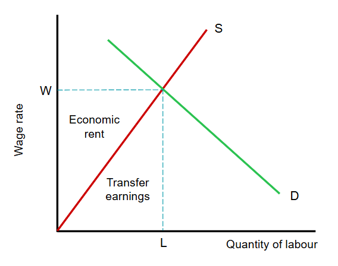
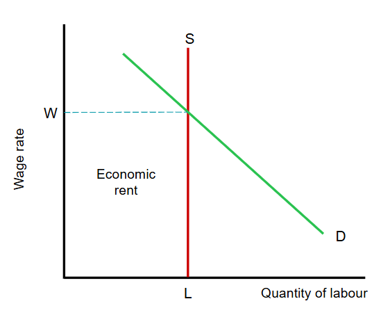
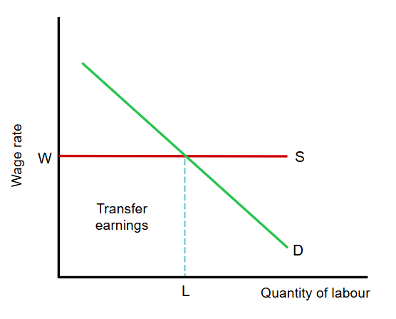

The demand for labour by a firm is based on two assumptions:
There are three main factors that determine the demand for labour:

This graph shows how wage rate affects the demand for labour.
At a wage rate of W, the quantity demanded by the firm is Q.
When the wage rate increases to W1, the demand falls to Q1. A further increase in wage rate to W2, reduces demand to Q2.
As shown, a rise in wage rates will increase labour costs and is likely to lead to a fall in the quantity of labour demanded by a firm.
Firms are keen to know the value if what is produces. This can be calculated as the marginal revenue product (MRP), which is the extra revenue earned by the firm when it employs one more worker.
MRP = marginal product from additional worker x price
The supply of labour is the total number of hours that labour is able and willing to work for a particular wage rate. It should be remembered that the labour market involves people and their willingless to participate in the labour market.

As with any supply, price (or wage in this case) has an important influence on the decision of any individual woerk to enter the labour market.
If the wage is too low, an individual may determine that it is not worth the effort to work and will stay home. Economic theory assumes that as wages increases, more people are willing to work - this is represented by the individual's supply curve sloping upwards.
However, beyond a certain point there is a trade-off between work and leisure. This is point X. Once the wage becomes high enough, individuals may prefer to work less and have more time for leisure as they are making enough money while working less hours.
A further factor that can affect an individual's supply of labour is income tax. If the tax is too high, people may be discentivised to work.

The supply curve of labour to a firm or industry consists of the sum of the individual supply curves of all workers employed in an industry. The slope of this supply curve is measured by elasticity of supply of labour, which is the extent labour supply responds to a change in wage rates.
The graph shows two different supply curves: L1 (inelastic), L2 (elastic).
In general, the more skills required, the more inelastic the supply of labour will be. For instance, a teacher has to spend four years to obtain the necessary qualifications. Therefore the supply for teachers is more inelastic than, for example, janitors where little education or training is required.
The long-run supply of labour is of particular significance for the economy as a whole.
There following factors determine the long-run supply of labour:
In the long-run the supply of labour to a particular firm depends on the monetary and non-monetary advantages provided to workers.
Monetary factors include: the salary itself, bonus payments, opportunities to work longer hours and pension arrangements.
Non-monetary factors include: hours of work, job security, holiday entitlement, promotion prospects, location of work place, job satisfaction and whether work can be done from home.

The demand curve reflects the value of the marginal productivity of labour.
Each firm purchases labour until the value of value of the marginal revenue product equals wage rate. Therefore, the wage paid in the market must equal the value of marginal revenue product of labour once it has brought demand and supply into equilibrium.
The labour market is dynamic like any market - any change in the supply or demand of labour will change the equilibrium wage. This will be shown in the following graphs.

If the demand for a product increases, the demand for labour to produce that good also increases. This will shift the demand curve for labour to the right.
The outcome is that the equilibrium wage rises from W to W1, and employment increases from L to L1.
The change in wage rate therefore reflects a change in the value of the marginal productivity of labour.

A change in the labour supply will also affect the market equilibrium.
Suppose there is an increase in migrant workers. This will increase the number of numbers in the market, shifting the labour supply curve to the right.
The increased supply of labour will decrease wages for all workers from W to W1, which lowers the costs for firms. This allows firms to hire more workers, which increases employment from L to L1.
As the number of workers increase, their marginal productivity and value of marginal revenue product falls.
So far, the analysis of how wages are determined is based on demand and supply. However, this is an unrealistic assumption as in many labour markets, the demand and supply of labour are affected by the actions of trade unions and governments.
Trade unions are organisations that seek to represent labour in their place of work. They were set up and continue to exist because individuals have very little power to influence conditions of employment, including wages.
Through collective bargaining, trade unions aim to:
In a competitive labour market, a powerful trade union is able to secure wages for its members above the equilibrium wage rate. If the trade union has a monopoly over workers with a particular type of skill, they are also able to push wages above the equilibrium rate. However, this may cause employers to go out of business due to high labour costs or employers may transfer production to countries with lower wages.
The aim of a minimum wage is to reduce poverty and the exploitation of workers who have little or no bargaining power with their employers.
However, the implementation of minimum wages can lead to cost-push inflation, affecting the economy as a whole. The effect on an industry is particularly dependent upon the elasticities of demand and supply for labour.
A minimum wage above the equilibrium wage will cause a labour surplus (supply exceeds demand). The loss of jobs is less when the demand for labour is inelastic. More jobs are lost when demand for labour is elastic.
Another problem is that sometimes a minimum wage is a national minimum wage, which does not take into account the variations in the cost of living in a country. For instance, the cost of living in a big city is a lot higher than in the subarbs.
A monopsony occurs when there is a single or dominant buyer, in this case of labour. The monopsonist buyer is able to determine the price or wage that is paid to workers. This is clearly an imperfect market situation.

This graph shows how the monopsonist buyer can affect the market equilibrium.
The wage the monopsonist pays is Wm, which is the profit-maximising position.
However, this wage rate is below what employers should pay workers. Workers should be paid the full value of their marginal revenue product which is at Wmrp.
The employer can set a low wage because of this buying power.
Wage differential is the difference in pay between workers with different skills and responsibilities.
One explanation is supply and demand. An occupation high in demand and low in supply will get higher wages than an occupation that is low in demand and high in supply.
However, there are also many other factors that cause wage differentials:
Transfer earnings is the minimum payment necessary to keep labour working. This can differ from person to person in the same occupation.
Economic rent is any payment to labour that is above transfer earnings.

Transfer earnings and economic rent are shown in this graph.
Trasfer earnings are indicated by the area under the labour supply curve, which is sloping upwards.
The area above transfer earnings is the worker's economic rent.
Different workers in the same jobs can have different transfer earnings as they may value their time and efforts differently. That means different workers will also receive different amounts of economic rent, despite having the same wages in the same occupation.

The case of superstars can be explained using this graph.
Such people have a scarce unique talent that their labour supply curve is perfectly inelastic.
This means their earnings consist entirely of economic rent. An example of someone with only economic rent is Lionel Messi.

In a market with many unskilled workers, the supply of labour is perfectly elastic because anyone can do this job.
This means workers have no economic rent as their earnings consists entirely of transfer earnings.
Employers can hire an infinite supply of labour at the market wage W.
Marginal Revenue Product: the addition to total revenue as a result on employing one more worker.
Trade Union: an organisation of workers that aims to protect and enhance the well-being of its members through collective negotiations with employers and government.
Monopsony: where there is a single buyer in the market.
Wage Differentials: difference in pay between workers with different skills and responsibilities.
Transfer Earnings: the amount that is earned by a factor of production in its best alternative use.
Economic Rent: a payment made to a factor of production above that which is necesary to keep it in its current use.